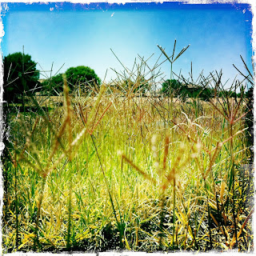
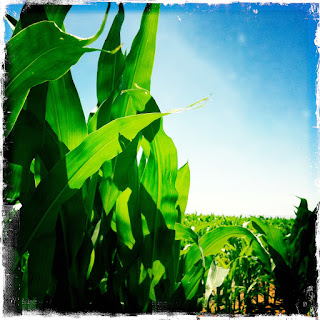
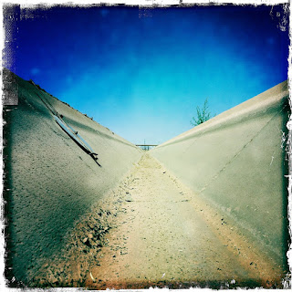
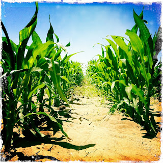
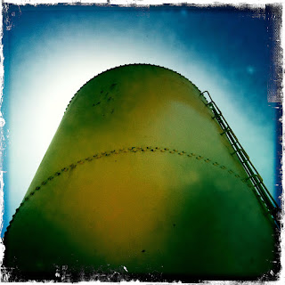

Recovered weblog entry
My excursion





"Go ride your bike", said my wife. So I did. Lens: John S
Film: Kodot XGrizzled

Recovered weblog entry





"Go ride your bike", said my wife. So I did. Lens: John S
Film: Kodot XGrizzled